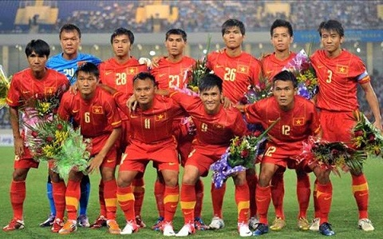
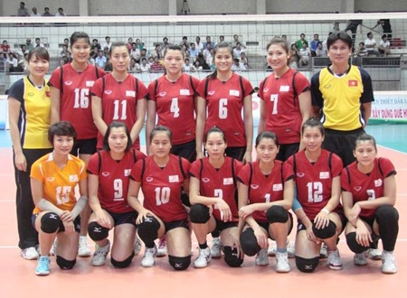
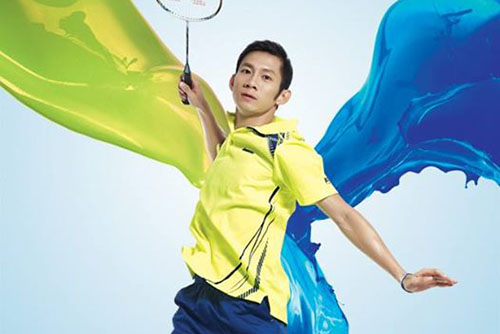
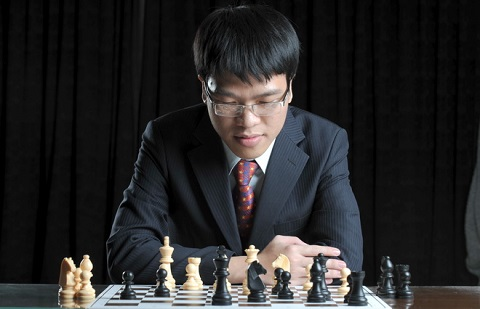
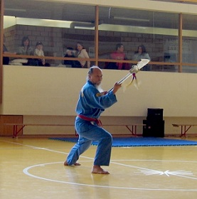

The Vietnam national football team (Vietnamese: Đội tuyển bóng đá quốc gia Việt Nam) is the national
football team representing Vietnam in international football competition and is managed by the Vietnam
Football Federation.

Football team
In the FIFA World Rankings, Vietnam's highest standing was in the first release of the figures, in
September 1998, at 84th. The team is currently ranked 136th in the World, 21st in Asia and 3rd in
Southeast Asia by FIFA (12 January 2017). During the late 1950s, known by the name South Vietnam
national football team it was one of the four strongest teams in Asia and advanced into the final
round of 1956 AFC Asian Cup, 1960 AFC Asian Cup, finishing 4th both times. The team also won
10th Merdeka Tournament in Malaysia, 1966.
Currently, Vietnam is one of the most successful teams in Southeast Asia along with Thailand,
Singapore, Malaysia and Indonesia. It won the ASEAN Football Championship in 2008. While
Vietnam was split into North and South Vietnam, two national teams existed and both were controlled
by similar Vietnam Football Associations. After the two countries unified in 1976 the Vietnam
Football Associations was renamed to Vietnam Football Federation.
Volleyball

Volleyball team
There are men's volleyball, however the Vietnam women's national volleyball team represents Vietnam
in international volleyball competitions and friendly matches.One of their greatest success was at
the 2012 Asian Women's Cup Volleyball Championship in Kazakhstan, when the team finished fourth in
the overall rankings.
Vietnam qualified for the 2012 Asian Women's Cup Volleyball Championship as the seventh seeded team,
based on their ranking in the 2011 Asian Women's Volleyball Championship.In the 2012 Asian Women's Cup
Volleyball Championship, Vietnam was placed in Group B together with China, Japan, Iran. Vietnam finished
second in the Group. In the quarter-finals, Vietnam faced South Korea which finished fourth at the 2012
Summer Olympics. Nguyễn Thị Ngọc Hoa scored 31 points in this thrilling game in which Korea was beaten,
3-2. It was their first win over Korea as far as AVC games are concerned. The Vietnamese were outplayed
by Thailand in the semi-finals. On 16 September 2012, Vietnam was beaten by the host Kazakhstan 0-3 in
the bronze medal match. In the overall-rankings, Vietnam took fourth place.
Asian Championship
Rank
Country
Year
8
Thailand
1991
7
Thailand
2001
6
Vietnam
2003
...
...
...
7
Vietnam
2009
Individual sports
Badminton
Nguyen Tien Minh is a male badminton player from Vietnam. His best achievement to date is a bronze
medal at the World Badminton Championship in 2013.
His awards
Voted and awarded by the press as the Distinctive Athlete of Ho Chi Minh City in 2004
Voted and awarded by the press as one of the Distinctive Athletes of Vietnam in 2004, 2007, and 2008
Awarded with the Certificate of Satisfactory Progress by the Ho Chi Minh City’s People Committee in 2005, 2006, 2007, 2008
National champion in the men's singles in 2002, 2004-2012.
Bronze Medal for Men's Singles at Wang Lao Ji BWF World Championships 2013

Nguyen Tien Minh
Chess
Le Quang Liem is a Vietnamese chess grandmaster and the 2013 World Blitz Chess Champion.
He was the Under-14 World Youth Chess Champion in July 2005. He competed for Vietnam at the Chess Olympiads
in 2006, 2008, 2010, 2012, 2014 and 2016 . In particular, his 8/10 score on board 1 at the 2012 Chess Olympiad
anchored the Vietnamese men's team to No. 7 in the final standing, the highest ever for Vietnam. Vietnam entered
the Olympiad ranked No. 27. As of the January 2012 FIDE rankings, he was the 29th ranked active player in the
world. He is currently the number-one ranked player in Vietnam.

Le Quang Liem
Martial arts
Vovinam

Master Tân Rousset training Dai Dao
Vovinam (short for Võ Việt Nam; Vietnamese: Việt Võ Đạo, Martial Arts of Vietnam) is a Vietnamese martial art.
Vovinam is practiced with and without weapons. It is based on the principle of between hard and soft. It includes
training of the body as well as the mind. It uses force and reaction of the opponent. Vovinam also includes
hand, elbow, kicks, escape- and levering techniques. Both attack and defense techniques are trained,
as well as forms, combat and traditional wrestling. The wide range of techniques include punching,
kicking, forms, wrestling, sword, staff, axe, folding fan and others.Self-defense techniques cover
defense against weaponless attacks like choking from behind and defense against attacks with knife
or sword. Advanced students learn to combine the techniques and learn to defend themselves against
armed opponents. Instructors train traditional weapons like the long stick, short stick, knife, sword
and sabre. Thereby the weapons serve as training devices for reaching optimal control of body and mind.